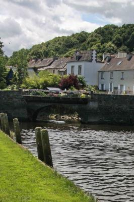

|

Le pont de Penzé
|
JEANNIC
(Chanson d'aire neuve)
Refrain:
Fillette ou garçon, battons l'aire nouvelle!
De Jeannic la belle
Ecoutez la chanson!
1. Au pont de Penzé, fille de meunière,
J'ai connu Jeannic, la blonde à l'oeil noir.
De ses beaux atours, ah! qu'elle était fière!
Mignonne et coquette, il fallait la voir,
A tout amoureux donnant de l'espoir!
Fillette...
2. Deux de ses galants, un jour sur la plage,
Se disant chacun l'amant cajolé,
Au vent les pen-baz! la lutte s'engage,
Si bien que, défunt, l'un s'en est allé
Dormir sous la terre au bourg de Taulé.
Fillette...
3. Ecoutez, enfants, la fin de l'histoire,
Jeannic en a pris un remords cruel;
Adieu les amours! sous la mante noire,
Expiant ses torts pour gagner le ciel,
Jeannic est depuis nonne au Mont-Carmel.
Fillette...
|